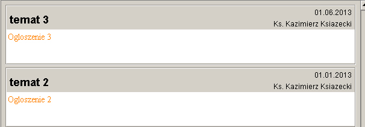
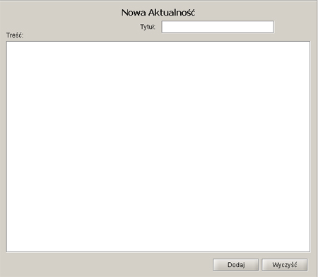

| Parvus Templum 1.0 | |
|
|
Aktualności |
|
Logowanie Aktualnosci Zamówienia Parafianie Ksieza Kontakt |
Kazdy, nawet niezalogowany uzytkownik ma mozliwosc przejżenia najnowszych aktualności.  Są tu takie informacje jak Temat aktualności, jej treść, data dodania oraz jej autor. Dodawać aktualności mogą jedynie księża, parafianin może je tylko podejżeć.
 Aby dodać aktualność należy wybrać Ksiądz->Dodaj News Wystarczy podać temat i treść, data oraz autor zostaną dodani automatycznie. Aktualność jest widoczna odrazu po dodaniu. |
© Inżynieria programowania
System zarzadzania uroczystosciami koscielnymi